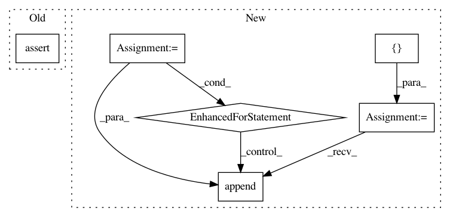

49a385eae93032125a6718433b3ca1753aee3b1e,testing/test_method_equivalence.py,TestEquivalence,test_all,#TestEquivalence#,87
Before Change
lengthscales.append(m.kern.lengthscales.value)
variances, lengthscales = np.array(variances), np.array(lengthscales)
self.assertTrue(np.allclose(variances, variances[0], 1e-5))
self.assertTrue(np.allclose(lengthscales, lengthscales.mean(), 1e-4))
mu0, var0 = self.models[0].predict_y(self.Xtest)
for m in self.models[1:]:
mu, var = m.predict_y(self.Xtest)
self.assertTrue(np.allclose(mu, mu0, 1e-3))
After Change
def test_all(self):
with self.test_context():
likelihoods = []
for m in self.models:
m.compile()
opt = gpflow.train.ScipyOptimizer()
opt.minimize(m, maxiter=300)
neg_obj = tf.negative(m.objective)
likelihoods.append(m.session.run(neg_obj).squeeze())
assert_allclose(likelihoods, likelihoods[0], rtol=1e-6)
variances, lengthscales = [], []
for m in self.models:
if hasattr(m.kern, "rbf"):
In pattern: SUPERPATTERN
Frequency: 3
Non-data size: 6
Instances
Project Name: GPflow/GPflow
Commit Name: 49a385eae93032125a6718433b3ca1753aee3b1e
Time: 2017-11-02
Author: art.art.v@gmail.com
File Name: testing/test_method_equivalence.py
Class Name: TestEquivalence
Method Name: test_all
Project Name: dmlc/gluon-cv
Commit Name: ee602b6f68f0bdd19f449a86955697f8f0a2d54c
Time: 2019-09-21
Author: yizhu59@gmail.com
File Name: gluoncv/data/transforms/video.py
Class Name: VideoCenterCrop
Method Name: forward
Project Name: NifTK/NiftyNet
Commit Name: 22b9b2bd35843166c5dd9f58319aa17e8311f28e
Time: 2018-06-20
Author: patricio@feops.com
File Name: niftynet/layer/rand_rotation.py
Class Name: RandomRotationLayer
Method Name: layer_op